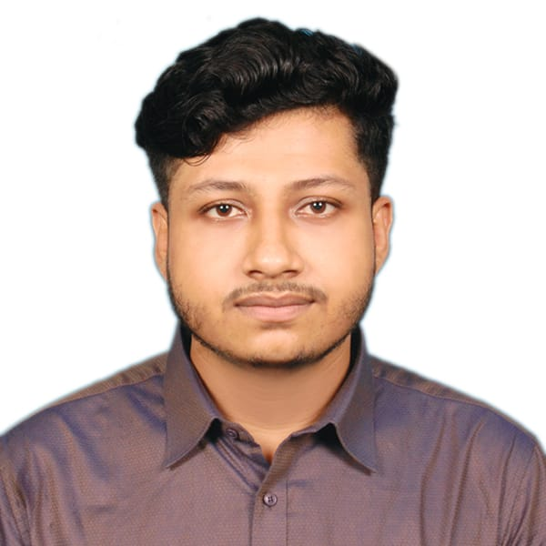

|
|
SAJID MAHMUD
Bottola, Azampur, Uttara
Dhaka-1219
01753855756; (Voice/Message)
sajidnihal52@gmail.com
|

|
Educational Background
Bachelor of Science in Computer Science and Engineering
American International University-Bangladesh
Kuril,Khilkhet.
Dhaka, Bangladesh
2022- Present (8th Semester)
CGPA: 3.85 out of 4
Higher Secondary School Certificate
Shahid Sayed Nazrul Islam Collage
Mymenshing
Passing year: 2020
GPA : 5.00 out of 5.00
Secondary School Certificate
Madhupur Shahid Smrity Higher Secondary School
Madhupur,Tangail
Passing year: 2018
GPA : 5.00 out of 5.00
Skills
- Systems: Windows, Linax
- Software: Microsoft word, Powerpoint, Autocad, NI Multisim, MATLAB,Fution 360,Solidworks
- Database Management: Microsoft SQL, Oracle 10g,
- Programming Language: Python, Java, C++, C.
Language:
Experiences
Working Experiences:
- 3D desiger at AIUB ROBOTIC CREW
- Project at Dr. Anwarul Abedin Institute of Innovation
- Team Leader at team AROURA(Compete in international level)
Projects:
- Humanoid Robot project at Dr. Anwarul Abedin Institute of Innovation
- ROBO Soccer BOT
- Fastest Line Follower(FLFR)
- Project on E-Ticketing System using Java
- C# Project on Music Player application
- Software Engineering Project on Fresh Fruit Service
Achievement
- Runners Up at Tecnoxian Bangladesh National Round and Qualify for International round which held in Agust 2024 in Noida,Delhi,India
- Runners Up at AIUB CS Fest Soccer Bot Competetion